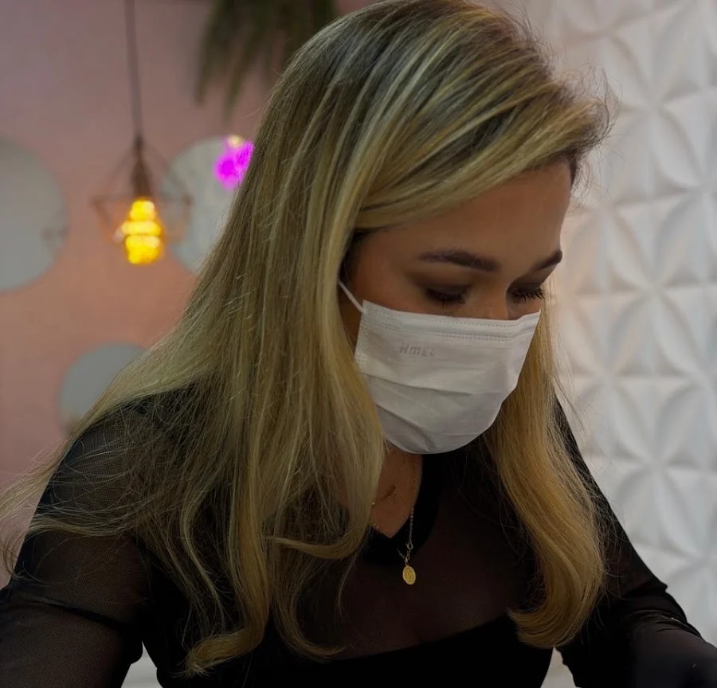
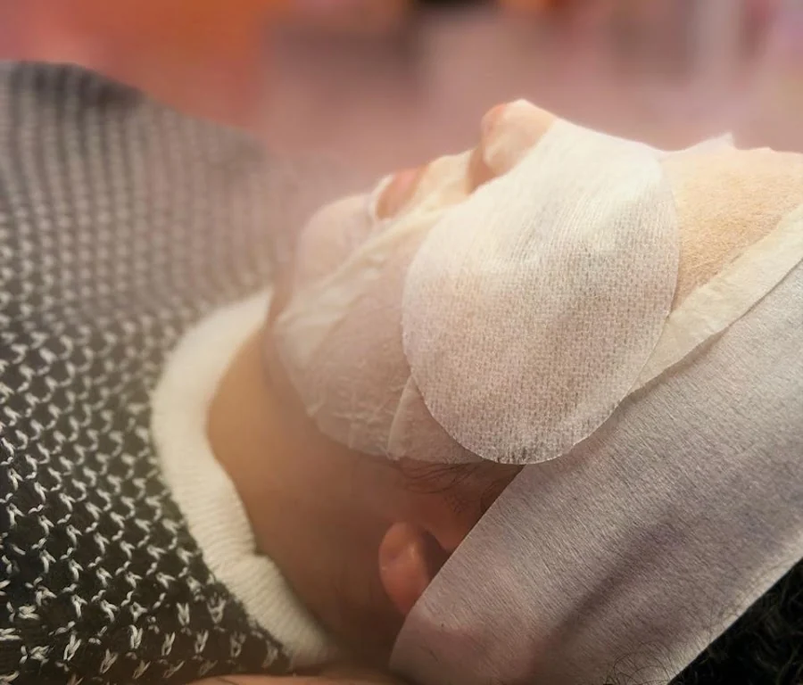
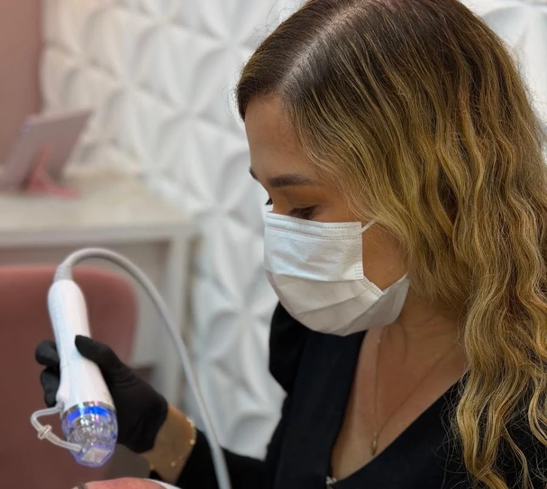
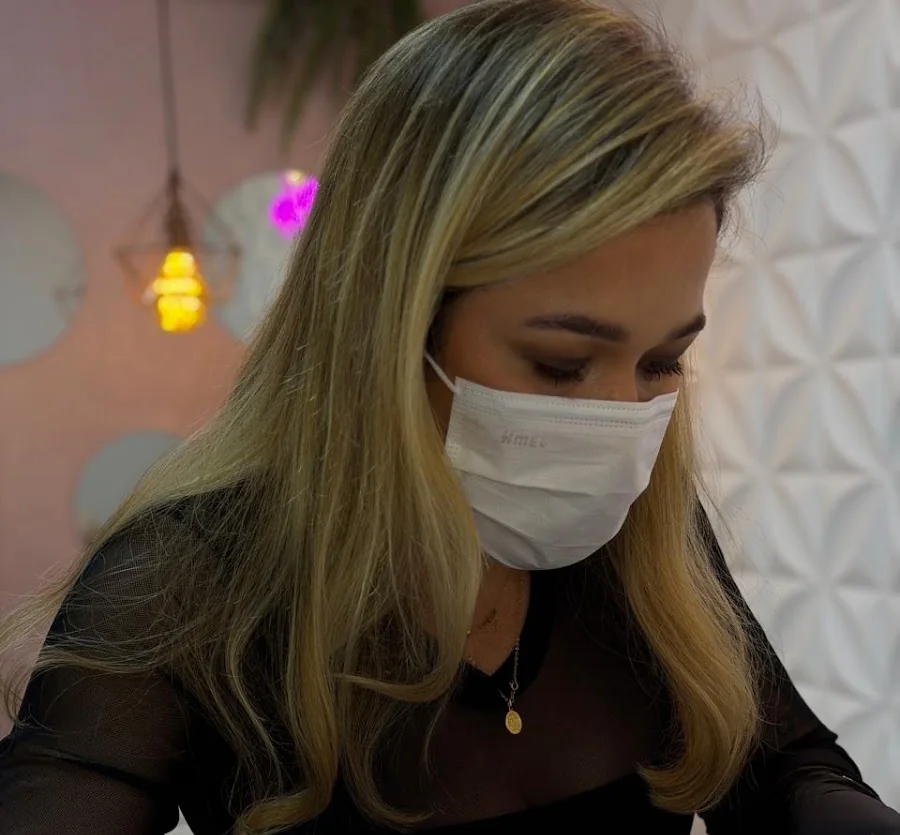
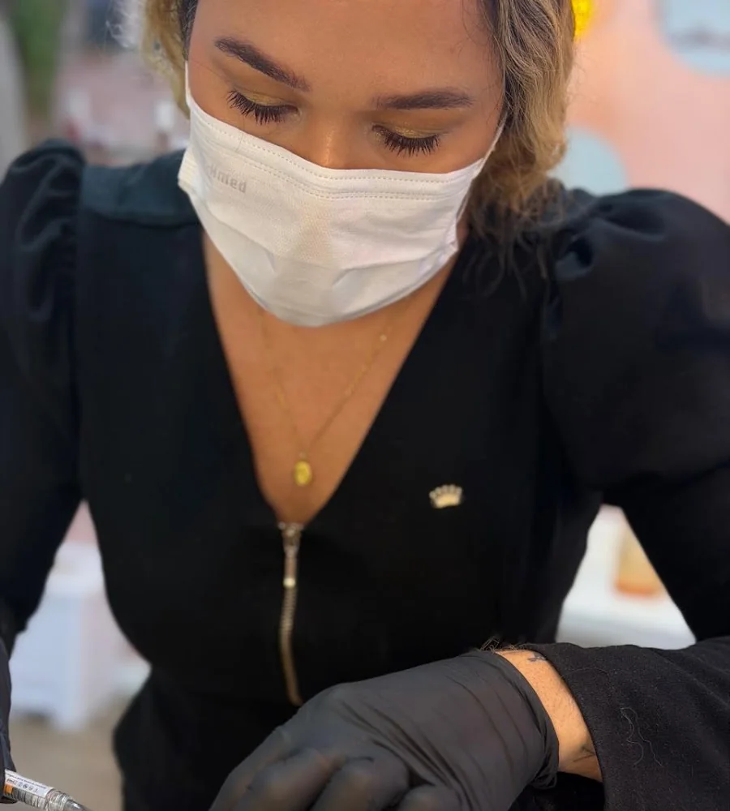
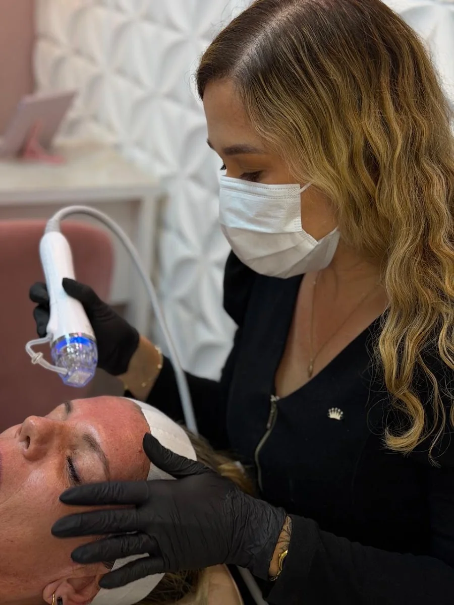

Harmonização facial
Preenchimentos e toxina botulínica, com atenção às proporções do rosto.
Ver procedimentosFace • Body • Glute Expert
Estética avançada e regenerativa que une ciência, precisão e sensibilidade para valorizar sua beleza com naturalidade.
Vanessa Lunna · CREFITO 311896-F

Preenchimentos e toxina botulínica, com atenção às proporções do rosto.
Ver procedimentos

Tecnologias e procedimentos indicados de acordo com a avaliação.
Conhecer a abordagem
Estética e fisioterapia dermatofuncional, com pós-graduação nas duas áreas.
Seu trabalho é voltado à harmonização facial e corporal, à saúde e à longevidade da pele. Na clínica, cada tratamento é planejado considerando a anatomia, as necessidades e os objetivos de quem busca atendimento.
A naturalidade orienta a escolha dos procedimentos, do planejamento à execução.
Conversar com a clínicaCuidados faciais e corporais definidos a partir de uma avaliação individual.
Toxina botulínica e preenchimentos facial e labial.
Protocolos corporais personalizados.
Limpeza de pele e dermaplaning.
Bioestimuladores de colágeno e protocolos de cuidado com a pele.


O cuidado com a pele vai além do preenchimento.
Os protocolos regenerativos e os bioestimuladores de colágeno são possibilidades de tratamento que podem ser indicadas para a qualidade da pele, conforme a avaliação profissional.
Conversar sobre os protocolosO primeiro atendimento é o momento de conversar sobre suas expectativas, entender as possibilidades de tratamento e esclarecer dúvidas. A indicação considera suas características individuais.
Informações sobre agendamentoA indicação é feita após uma avaliação profissional, considerando suas necessidades e características individuais.
A possibilidade de associar técnicas depende da avaliação e da indicação profissional.
Entre em contato com a clínica para consultar horários e informações sobre o atendimento.
Clínica Estética Vanessa Lunna
Rua General Luís Mallet, 256